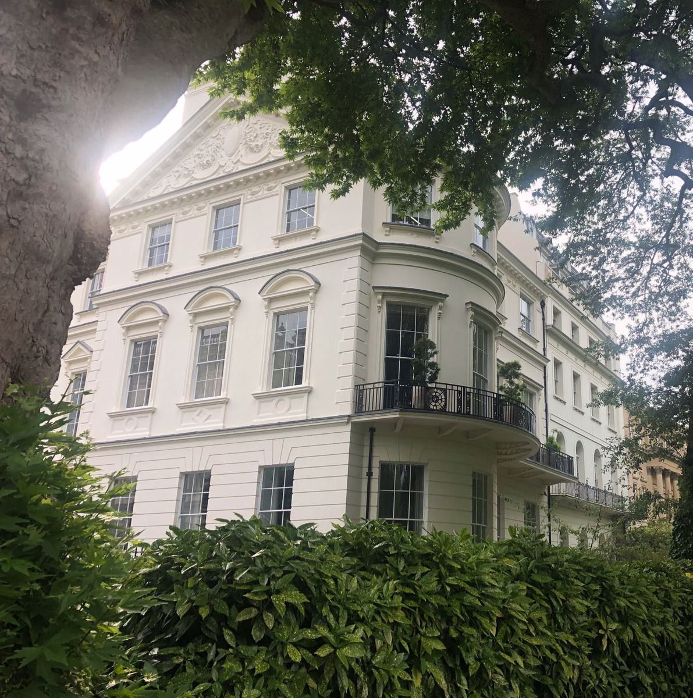
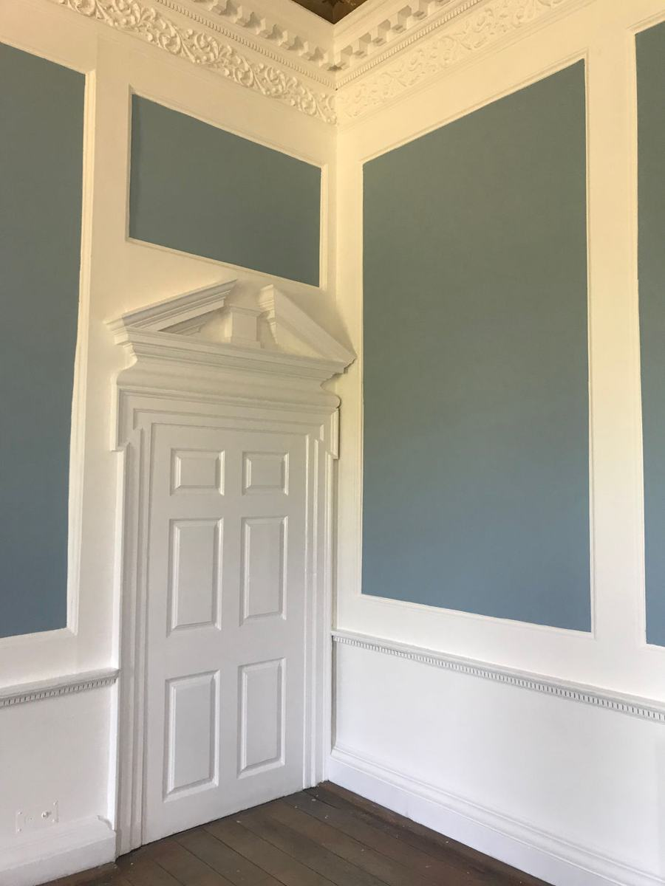
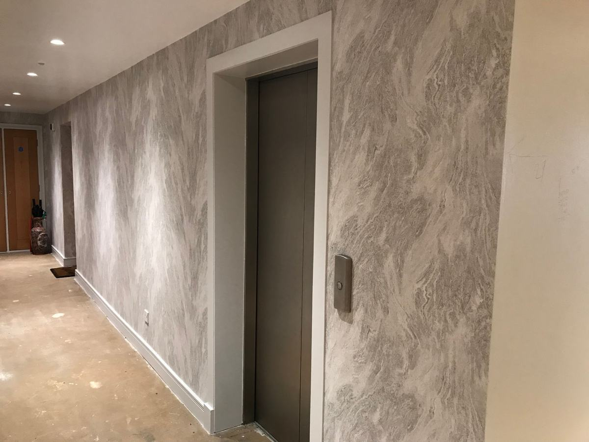
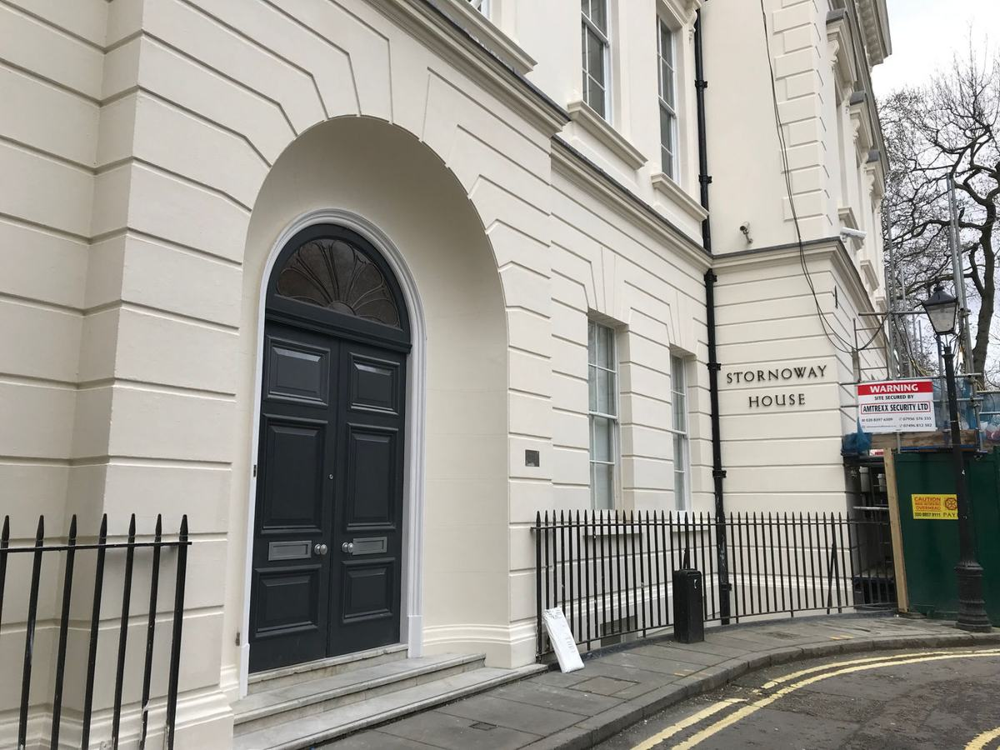
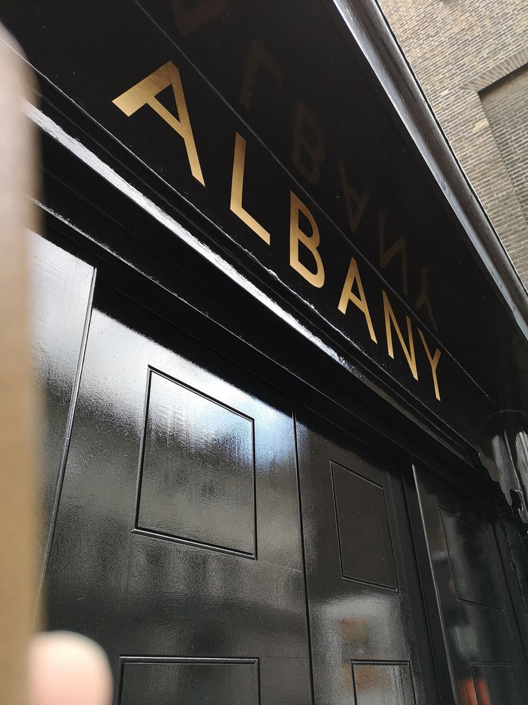

<title>Hugh Anthony Homepage</title>
<meta name="claude:viewport-fit-sides" content="cover">
<link rel="preconnect" href="https://fonts.googleapis.com">
<link rel="preconnect" href="https://fonts.gstatic.com" crossorigin>
<link rel="stylesheet" href="https://fonts.googleapis.com/css2?family=Marcellus&family=Hanken+Grotesk:wght@400;500;600&family=IBM+Plex+Mono:wght@400;500&display=swap">
<link rel="stylesheet" href="site.css">

<header class="top">
  <div class="wrap">
    <a class="brand" href="#top" aria-label="Hugh Anthony home"><span class="mono" aria-hidden="true">HA</span><span class="wm"><b>Hugh Anthony</b><small>Interiors &amp; Exteriors · Est. 2000</small></span></a>
    <nav class="nav" aria-label="Main">
      <a href="#projects">Projects</a>
      <a href="#methods">Specialist methods</a>
      <a href="#contractors">For contractors</a>
      <a href="#about">About</a>
      <a href="#enquire">Contact</a>
    </nav>
    <a class="phone" href="tel:02088554555">020 8855 4555</a>
  </div>
</header>

<main id="top">
  <section class="hero">
    <div class="wrap">
      <div>
        <p class="eyebrow">Painting, decorating &amp; sash restoration · London and the South East</p>
        <h1>Redecoration for London’s historic and <span class="gold">listed</span> buildings.</h1>
        <p class="lede">Specialist painting and window restoration sub-contractor to restoration and refurbishment contractors, since 2000.</p>
        <div class="ctas">
          <a class="btn solid" href="#enquire">Discuss a package</a>
          <a class="btn" href="#contractors">Capability statement (PDF)</a>
        </div>
        <div class="since">
          <div><b>2000</b><span>Family owned<br>and run since</span></div>
          <div><b>CSCS</b><span>Carded<br>workforce</span></div>
          <div><b>M25</b><span>Based in Orpington,<br>Kent</span></div>
        </div>
        <p class="note"><b>Why:</b> the current homepage opens on a blurred stock skyline and “Quality meets excellence”. This says exactly what they do, for whom, and where, then gives a main contractor the two things they came for: a phone call or the paperwork.</p>
      </div>
      <figure>
        
        <figcaption class="plate"><b>Stornoway House</b><span>Façade redecoration · sash carpentry repairs · railings</span></figcaption>
      </figure>
    </div>
  </section>

  <section class="worked" aria-label="Buildings we have worked on">
    <div class="wrap">
      <p class="eyebrow">Buildings we have worked on</p>
      <ul>
        <li>Portuguese Embassy</li>
        <li>St Martin-in-the-Fields</li>
        <li>Smithfield Market</li>
        <li>Vintners’ Hall</li>
        <li>Holborn Bars</li>
        <li>No. 1 Palace Street</li>
      </ul>
    </div>
  </section>

  <section class="block" id="projects">
    <div class="wrap">
      <div class="head">
        <div><p class="eyebrow">Selected projects</p><h2>Work on buildings people walk past every day</h2></div>
        <p>Every project links to a full case study: the brief, the condition we found, the system we specified and how it was programmed around the building in use.</p>
      </div>
      <div class="projects">
        <a class="proj wide" href="#projects">
          
          <div class="meta">
            <h3>Portuguese Embassy</h3>
            <p>External redecoration of the façade and windows, with carpentry repairs to sash windows as required.</p>
            <dl class="spec"><dt>Scope</dt><dd>Façade · windows · sash repairs</dd><dt>Sector</dt><dd>Embassy &amp; chancery</dd></dl>
            <p class="chip"><i style="--c:#e4dccb"></i><span>Stucco off-white<em>Sampled from photo · ref TBC</em></span></p>
          </div>
        </a>
        <a class="proj" href="#projects">
          
          <div class="meta">
            <h3>Berkshire College of Agriculture</h3>
            <p>Internal redecoration of panelled walls and ceiling to the Jacob Bancks Room.</p>
            <dl class="spec"><dt>Scope</dt><dd>Panelling · ceiling</dd><dt>Sector</dt><dd>Schools &amp; colleges</dd></dl>
            <p class="chip"><i style="--c:#6d8a8b"></i><span>Panel blue-green<em>Sampled from photo · ref TBC</em></span></p>
          </div>
        </a>
        <a class="proj" href="#projects">
          
          <div class="meta">
            <h3>Vestry Hall, St Martin-in-the-Fields</h3>
            <p>External redecoration of the façade in mineral silicate paint.</p>
            <dl class="spec"><dt>System</dt><dd>Keim Mineral Paints</dd><dt>Sector</dt><dd>Churches</dd></dl>
            <p class="chip"><i style="--c:#c8bba3"></i><span>Mineral stone<em>Sampled from photo · ref TBC</em></span></p>
          </div>
        </a>
        <a class="proj" href="#projects">
          
          <div class="meta">
            <h3>Trinity Wharf</h3>
            <p>Internal redecoration and fabric-backed vinyl wallcovering to the communal areas of five buildings.</p>
            <dl class="spec"><dt>Scope</dt><dd>5 buildings · communal areas</dd><dt>Sector</dt><dd>Residential blocks</dd></dl>
            <p class="chip"><i style="--c:#a39e94"></i><span>Wallcovering grey<em>Sampled from photo · ref TBC</em></span></p>
          </div>
        </a>
        <a class="proj" href="stornoway-house.html">
          
          <div class="meta">
            <h3>Stornoway House</h3>
            <p>Façade redecoration, sash window carpentry repairs, new terrace decking and refurbished railings.</p>
            <dl class="spec"><dt>Scope</dt><dd>Façade · sashes · decking · railings</dd><dt>Sector</dt><dd>Listed buildings</dd></dl>
            <p class="chip"><i style="--c:#232a2e"></i><span>Entrance door black<em>Sampled from photo · ref TBC</em></span></p>
          </div>
        </a>
      </div>
      <p class="note"><b>Paint chips:</b> each project carries the colour of its actual finish, sampled from the photos for now. The live site would use the maker’s name and reference (e.g. Keim, Farrow &amp; Ball), which shows the detail heritage clients care about.</p>
      <p class="note"><b>Why:</b> today’s portfolio has one photo and one line per job. A “spec line” under each project speaks a contractor’s language (scope, system, sector) and each card becomes a case study page that can rank in search.</p>
    </div>
  </section>

  <section class="block methods" id="methods">
    <div class="wrap">
      <div class="head">
        <div><p class="eyebrow">Specialist methods</p><h2>The right coating for the substrate, and the trades to finish the job</h2></div>
        <p>Historic fabric needs breathable systems and people who know when to repair rather than replace. We do the preparation, carpentry and fine finishing in house.</p>
      </div>
      <div class="mgrid">
        <div class="mlist">
          <div class="m">
            <div class="mh"><svg class="glyph" viewBox="0 0 48 48" fill="none" stroke="currentColor" stroke-width="1.5" stroke-linejoin="round" stroke-linecap="round" aria-hidden="true"><path d="M8 46V4h34v5h-4v3c-6 0-7 3-9 7s-5 6-10 6v4h-4v4H8"/><path d="M8 14l-4 4M8 22l-4 4M8 30l-4 4M8 38l-4 4" opacity=".55"/></svg><h3>External redecoration</h3></div>
            <div><p>Limewash for traditional and historic properties, mineral silicate paint that bonds with the masonry, and breathable masonry systems for render and stucco.</p>
              <div class="tags"><span>Limewash</span><span>Keim mineral silicate</span><span>Dulux Weathershield</span></div></div>
          </div>
          <div class="m">
            <div class="mh"><svg class="glyph" viewBox="0 0 48 48" fill="none" stroke="currentColor" stroke-width="1.5" stroke-linejoin="round" stroke-linecap="round" aria-hidden="true"><rect x="9" y="3" width="30" height="41"/><path d="M5 44h38"/><g><rect x="12" y="6" width="24" height="18"/><path d="M20 6v18M28 6v18M12 15h24"/></g><g class="lower"><rect x="12" y="23" width="24" height="18" fill="var(--stone)"/><path d="M20 23v18M28 23v18M12 32h24"/></g></svg><h3>Sash &amp; casement windows</h3></div>
            <div><p>Timber repair and conservation using the Repair Care system, which our operatives are trained in. New sashes and casements supplied and fitted where needed.</p>
              <div class="tags"><span>Repair Care trained</span><span>Splice repairs</span><span>Draught-proofing</span></div></div>
          </div>
          <div class="m">
            <div class="mh"><svg class="glyph" viewBox="0 0 48 48" fill="none" stroke="currentColor" stroke-width="1.5" stroke-linejoin="round" stroke-linecap="round" aria-hidden="true"><rect x="6" y="6" width="36" height="36"/><rect x="12" y="12" width="24" height="24"/><path d="M6 6l6 6M42 6l-6 6M6 42l6-6M42 42l-6-6"/><rect x="15.5" y="15.5" width="17" height="17" opacity=".45"/></svg><h3>Interiors &amp; wallcoverings</h3></div>
            <div><p>Panelled rooms, ceilings and woodwork, plus traditional papers for residential work and wide-width vinyl for commercial and communal areas.</p>
              <div class="tags"><span>Panelling</span><span>Traditional papers</span><span>Wide-width vinyl</span></div></div>
          </div>
          <div class="m">
            <div class="mh"><svg class="glyph" viewBox="0 0 48 48" fill="none" stroke="currentColor" stroke-width="1.5" stroke-linejoin="round" stroke-linecap="round" aria-hidden="true"><rect x="5" y="13" width="30" height="30"/><g class="lift"><path class="leaf" d="M12 6h29v23l-7 7H12z"/><path class="leaf" d="M41 29h-7v7"/></g></svg><h3>Fine &amp; decorative finishes</h3></div>
            <div><p>Gilding, bronzing, sign writing and glazed brick and tile repairs, carried out by our own fine artist.</p>
              <div class="tags"><span>Gold leaf</span><span>Bronzing</span><span>Sign writing</span><span>Glazed brick repair</span></div></div>
          </div>
        </div>
        <div class="craft">
          <figure><figcaption>Gilding</figcaption></figure>
          <figure><figcaption>Sign writing</figcaption></figure>
          <p class="quote">Few painting contractors can also gild, signwrite and repair glazed brick. That is why restoration contractors call us.</p>
        </div>
      </div>
      <p class="note"><b>Why:</b> the niche skills are the real differentiator but sit in one sentence on the About page. Each method here should get its own page for search terms like “Keim mineral paint contractor London” or “sash window repair care London”.</p>
    </div>
  </section>

  <div class="wrap" aria-hidden="true"><div class="railings on-green"></div></div>
  <section class="block green" id="contractors">
    <div class="wrap contract">
      <div class="intro">
        <p class="eyebrow">For main contractors</p>
        <h2>Ready for your pre-qualification</h2>
        <p>We work as a sub-contractor to restoration and refurbishment contractors. Everything you need to onboard us is in one document.</p>
        <div class="ctas"><a class="btn solid" href="#enquire">Request capability statement</a></div>
        <div class="sectors" id="about" aria-label="Sectors">
          <span>Heritage &amp; listed buildings</span><span>Churches</span><span>Inns of Court</span><span>Livery halls</span><span>Chancery buildings</span><span>Landed estates</span><span>Schools &amp; colleges</span><span>Residential blocks</span><span>Commercial</span>
        </div>
      </div>
      <ul class="checks">
        <li><svg width="18" height="18" viewBox="0 0 18 18" aria-hidden="true"><path d="M3 9.5l4 4 8-9" fill="none" stroke="var(--gold)" stroke-width="2"/></svg><div><b>CSCS carded workforce</b><span>Experienced in all aspects of the trade</span></div></li>
        <li><svg width="18" height="18" viewBox="0 0 18 18" aria-hidden="true"><path d="M3 9.5l4 4 8-9" fill="none" stroke="var(--gold)" stroke-width="2"/></svg><div><b>SMAS Worksafe</b><span>Health &amp; safety pre-qualification</span></div></li>
        <li><svg width="18" height="18" viewBox="0 0 18 18" aria-hidden="true"><path d="M3 9.5l4 4 8-9" fill="none" stroke="var(--gold)" stroke-width="2"/></svg><div><b>CITB registered</b><span>Training and apprenticeships</span></div></li>
        <li><svg width="18" height="18" viewBox="0 0 18 18" aria-hidden="true"><path d="M3 9.5l4 4 8-9" fill="none" stroke="var(--gold)" stroke-width="2"/></svg><div><b>Repair Care trained</b><span>Timber window repair system</span></div></li>
        <li><svg width="18" height="18" viewBox="0 0 18 18" aria-hidden="true"><path d="M3 9.5l4 4 8-9" fill="none" stroke="var(--gold)" stroke-width="2"/></svg><div><b>RAMS for every package</b><span class="tbc">TO CONFIRM WITH CLIENT</span></div></li>
        <li><svg width="18" height="18" viewBox="0 0 18 18" aria-hidden="true"><path d="M3 9.5l4 4 8-9" fill="none" stroke="var(--gold)" stroke-width="2"/></svg><div><b>Public liability £[x]m</b><span class="tbc">TO CONFIRM WITH CLIENT</span></div></li>
      </ul>
    </div>
    <div class="wrap"><p class="note"><b>Railings and green:</b> the one bold colour on the page. The railing divider stands on the green like the front of a Georgian terrace.</p><p class="note"><b>Why:</b> the About page says most work comes through main contractors, but nothing on the site answers a contractor’s checklist. Gold-labelled items are placeholders to confirm with Hugh Anthony before anything goes live.</p></div>
  </section>

  <section class="band" id="enquire">
    <div class="wrap">
      <div>
        <p class="eyebrow">Enquiries &amp; tenders</p>
        <h2>Pricing a heritage package?</h2>
        <p>Send us the drawings or specification and we will come back with a price and programme. Site visits by appointment.</p>
        <div class="direct">
          <div><small>Office · Mon–Fri 8.30–5.30</small><b>020 8855 4555</b></div>
          <div><small>Email</small><b>info@hughanthony.co.uk</b></div>
        </div>
      </div>
      <form id="enq" novalidate>
        <label>Name<input id="f-name" name="name" autocomplete="name" value=""></label>
        <label>Company<input id="f-co" name="company" autocomplete="organization"></label>
        <fieldset class="radios full"><legend>I am a</legend>
          <label><input type="radio" name="role" id="r1" value="contractor" checked> Main contractor</label>
          <label><input type="radio" name="role" id="r2" value="agent"> Managing agent / surveyor</label>
          <label><input type="radio" name="role" id="r3" value="owner"> Building owner</label>
        </fieldset>
        <label class="full">Project &amp; location<input id="f-proj" name="project" placeholder="e.g. Grade II terrace, Kensington: external redecoration"></label>
        <label class="full">Message<textarea id="f-msg" name="message" placeholder="Scope, programme, tender return date"></textarea></label>
        <button class="btn full" type="submit">Send enquiry</button>
        <p class="sent" id="sent" hidden>Mockup only. In the live site this would send to info@hughanthony.co.uk.</p>
      </form>
    </div>
  </section>
</main>

<footer>
  <div class="wrap">
    <div><b>Hugh Anthony Interiors Ltd</b>Family owned and run since 2000. Specialist painting, decorating and window restoration for London and the South East.</div>
    <div><b>Office</b><address>Suite 32, Press House<br>Crest View Drive<br>Petts Wood, Orpington<br>Kent BR5 1FE</address></div>
    <div><b>Contact</b>020 8855 4555<br>info@hughanthony.co.uk<br>Visits by appointment</div>
    <div><b>Site</b><a href="#projects">Projects</a><br><a href="#methods">Specialist methods</a><br><a href="#contractors">For contractors</a></div>
    <div class="legal"><span>© 2026 Hugh Anthony Interiors Ltd</span><span>Registered in England no. 3979960</span><span>Terms</span><span>Privacy</span></div>
  </div>
</footer>

<button class="toggle" id="toggle" type="button" aria-pressed="false">Show design notes</button>

<script>
const t = document.getElementById('toggle');
t.addEventListener('click', () => {
  const on = document.body.classList.toggle('notes');
  t.setAttribute('aria-pressed', on);
  t.textContent = on ? 'Hide design notes' : 'Show design notes';
});
document.getElementById('enq').addEventListener('submit', e => {
  e.preventDefault();
  document.getElementById('sent').hidden = false;
});
</script>
